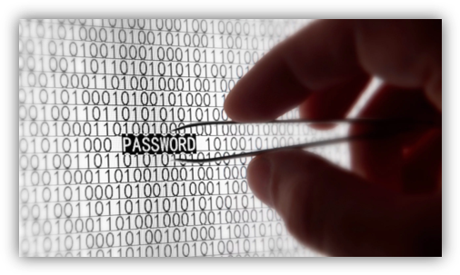

Стеганография - это наука о скрытии информации в различных носителях данных без привлечения внимания третьих лиц. Одним из ключевых аспектов стеганографии является техника встраивания, которая определяет способы внедрения скрытых сообщений в носитель.
Познакомимся с несколькими техниками встраивания:
Метод LSB (Least Significant Bit):
Данный метод основан на изменении наименее значимого бита (LSB) пикселей изображения или звуковых сэмплов для встраивания скрытой информации.
Прост в реализации, но может быть уязвим к атакам, так как изменения LSB могут быть обнаружены статистическими методами.
Методы изменения частоты:
В данной технике скрытая информация встраивается путем изменения частотных характеристик носителя, таких как спектральные компоненты звукового сигнала или цветовые составляющие изображения.
Примеры включают методы изменения амплитуды, фазы или частоты сигнала для передачи скрытого сообщения.
Стеганография - это наука о скрытии информации в различных носителях данных без привлечения внимания третьих лиц. Одним из ключевых аспектов стеганографии является техника встраивания, которая определяет способы внедрения скрытых сообщений в носитель.
Познакомимся с несколькими техниками встраивания:
Методы пространственного размещения:
Эти методы включают в себя размещение скрытой информации в различных областях носителя, таких как пиксели изображения или блоки звукового сигнала.
Примеры включают размещение битов скрытого сообщения в определенных областях изображения с использованием специальных алгоритмов.
Методы временного размещения:
В этой технике скрытая информация встраивается во временные параметры носителя, такие как временные интервалы между сэмплами аудио или видео сигнала.
Примеры включают изменение длительности или частоты кадров видео для передачи скрытого сообщения.
Выбор оптимальной техники зависит:
Важно учитывать потенциальные уязвимости каждой техники и применять соответствующие меры для защиты от атак.
Техники встраивания играют ключевую роль в стеганографии, обеспечивая эффективное скрытие информации и защиту конфиденциальности данных. Понимание различных методов встраивания поможет разработчикам и исследователям создавать более надежные стеганографические системы и противостоять возможным угрозам безопасности.
